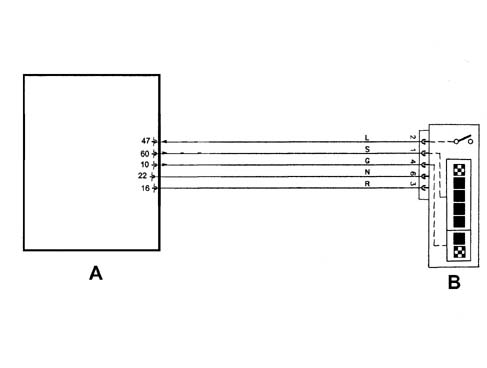

1058D Check on operation of GAS/Petrol selector
- Path
- Test > 10 ENGINE > 1058 CNG FUEL SYSTEM > 1058D Check on operation of GAS/Petrol selector
- Kind
- test / check procedure
- Applies to
- all engines; all production periods; only with equipment: BIPOWER
- Interactive page
- https://sloeber94.github.io/elrnDB-fDbl/en/#/2585348
Applies to: all engines; all production periods; only with equipment: BIPOWER
Supply check:
- With the Examiner in the 'Instrument' ambient in the 'Voltmeter' function check that, with the ignition ON, the Gas/Petrol selector receives a supply (voltage of + 5 Volt) at the Metatron 5D0 control unit, between pins 16 and 22.
Gas level signal check:
- With the Examiner in the 'Voltmeter' function, select the end of scale value at 20 Volt and the basic time of 1 second and, with the ignition key in the ON position, connect the positive Examiner probe to pin 60 of the Metatron 5D0 control unit and the negative probe to the vehicle earth.
- Press the Start icon and check that there is a square wave signal with variable PWM at the Gas level
Gas/petrol operating mode check:
- With the Examiner in the voltmeter function, check that with the ignition key in the ON position and the Gas/Petrol selector switched to 'Gas', there is an input voltage of +5 Volt at the Metatron 5D0 control unit at pin 47 and the green LED for the gas operating mode is on. Place the selector in the 'Petrol' position and check that there is a voltage of 0 Volt at pin 47 and that the yellow LED for petrol operation is lit up.
- Check that with the Gas/Petrol selector switched to 'Gas', there is a 'High' signal (more than 3.5 Volt) at the Metatron 5D0 control unit at pin 10 and that the green LED lights up. Place the selector in the 'Petrol' position and check that there is a 'Low' voltage signal (less than 3.5 Volt) and that the yellow LED lights up.

A - Metatron 5D0 control unit B - Gas/Petrol selector